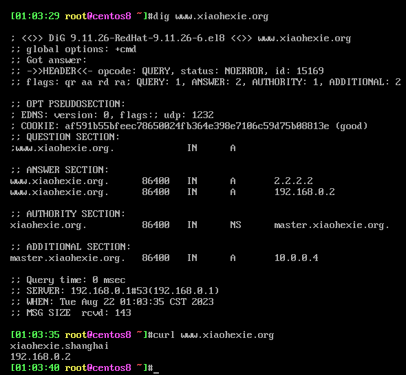
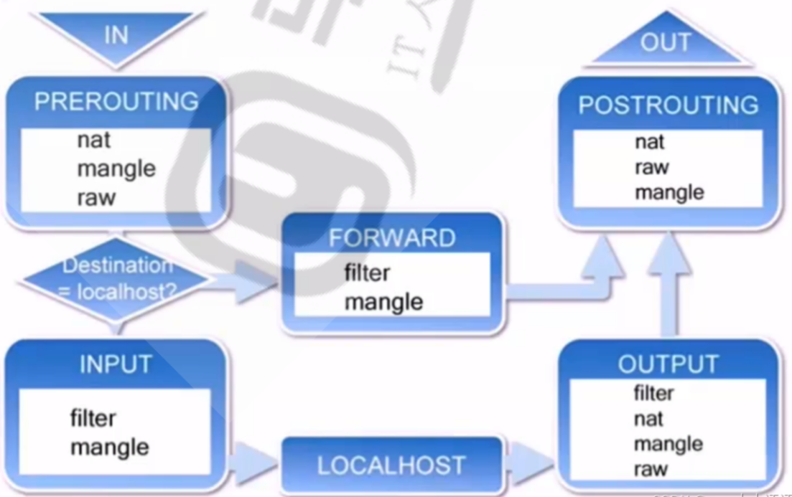

完成作业：
1.SUDO,PAM配置规范说明 sudo配置规范
sudo：允许管理员让普通用户执行一些或全部的root命令的一个工具
PAM配置规范
1 2 3 4 5 6 7 8 9 10 11 12 13 14 15 16 17 18 19 20 21 22 23 PAM：插件式的认证模块
2.chrony搭建私有ntp服务 服务器配置：
1 2 3 4 5 6 7 8 9 10 11 12 13 14 15 16 17 18 19 20 21 22 23 24 25 26 # 安装chrony # 修改配置文件 # allow 192.168.0.0/16 # Serve time even if not synchronized to a time source . # 重启chronyd服务 # 服务器启动会打开123端口
客户端配置：
1 2 3 4 5 6 7 8 9 10 11 12 13 14 15 16 17 18 19 20 21 22 23 24 25 26 27 # 安装chrony # 修改配置文件 # 重启服务 # 确认同步成功
3.说明CDN原理
用户访问网站资源，先经过本地DNS解析，如果有结果直接返回给客户端;
本地缓存没有则授权dns查询；
返回域名cname 对应的IP地址；
域名解析请求dns调度系统，调度系统为其分配最佳ip地址；
返回缓存cdn服务器ip地址；
用户向缓存服务器发送请求，cdn将用户的数据返回给用户终端；
4.搭建智能DNS，实现不同地域客户端解析到不同主机 4.1 环境要求 1 2 3 4 5 6 需要5台主机
4.2 准备 4.3 实现步骤 4.3.1 DNS服务器网卡配置 1 2 3 4 5 6 7 8 9 10 11 12 13 14 15 16 17 18 19 20 21 #
4.3.2 主DNS服务端配置文件实现view 1 2 3 4 5 6 7 8 9 10 11 12 13 14 15 16 17 18 19 20 21 22 23 24 25 26 27 28 29 30 31 32 33 34 35 36 37 # 1、安装bind # 2、修改文件 # # 3、添加ACL # # 4、创建view
4.3.3 实现区域配置文件 1 2 3 4 5 6 7 8 9 10 11 12 13 14 15 16 17 18 19 20 21 22 23 24 25 26 27 vim /etc/named.rfc1912.zones.bj
4.3.4 创建区域数据库文件 1 2 3 4 5 6 7 8 9 10 11 12 13 14 15 16 17 18 19 20 21 22 23 24 25 26 27 28 29 30 31 32 vim /var/named/xiaohexie.org.zone.bj$ TTL 1D $ TTL 1D
4.3.5 实现位于不同区域的两个web服务器 1 2 3 4 5 6 7 8 9 10 # # 在web服务器1： 10.0.0.129实现 # 在web服务器2： 192.168.0.2实现
4.3.6 客户端测试 1 2 3 4 5 # # DNS客户端1：192.168.0.100实现，DNS指向192.168.0.1 # DNS客户端2：10.0.0.200实现，DNS指向10.0.0.4
#DNS客户端1：192.168.0.100验证结果：

#DNS客户端2：10.0.0.200主机上验证结果：
5.解释DNS解析流程
递归查询：
是指DNS服务器在收到用户发起的请求时，必须向用户返回一个准确的查询结果。如果DNS服务器本地没有存储与之对应的信息，则该服务器需要询问其他服务器，并将返回的查询结果提交给用户。
一般来说，由客户机发起的和本地DNS服务器之间属于递归查询，即当客户机向DNS服务器发出请求后，若DNS服务器本身不能解析，则会向其他的DNS服务器发出查询请求，得到最终的肯定或否定的结果后转交给客户机。此查询的源和目标保持不变，为了查询结果客户机只需要发起一次查询。
递归算法：客户端向LocalDNS发起域名查询–>localDNS不知道对应域名的IP–>但他知道谁知道–>他代为帮客户端去询问其他DNS服务器–>最后返回最终结果
迭代查询：
是指DNS服务器在收到用户发起的请求时，并不直接回复查询结果，而是返回给用户另一台DNS服务器的地址，用户再向这台DNS服务器提交请求，这样依次反复，直到返回查询结果。
一般情况下，本地的DNS服务器向其他DNS服务器的查询属于迭代查询，如：若对方不能放回权威的结果，则会向下一个DNS服务器（参考前一个DNS服务器返回的结果）再次发起进行查询，直到返回查询的结果为止。此查询的源不变，但查询的目标不断变化，为了查询到结果一般需要发起多次查询
迭代算法：客户端向LocalDNS发起域名查询–>localDNS不知道对应域名的IP–>但他知道谁知道并推荐客户端应该找谁–>客户端自己去找它
DNS缓存
DNS缓存是将解析数据存储在靠近发起请求的客户端的位置，也可以说DNS数据是可以缓存在任意位置，最终目的是以此减少递归查询过程，可以更快的让用户获得请求结果。
6.iptables 5表5链解释
五表：
filter:过滤规则表
nat：地址规则转换表
mangle：修改数据标记位规则表
raw： 关闭启动用的连接追踪机制，加快封包穿越速度
security:用于强制访问mac网络规则，有selinux实现

五链：
pre_routing：在对数据包做路由选择之前，将应用此链中的规则
input：当收到访问防火墙本机地址的数据包时，将应用此链中的规则
output：当防火墙本机向外发送数据包时，将应用此链中的规则
forward：当收到需要通过防火中转发给其他地址的数据包时，将应用此链中的规则，注意如果需要实现forward转发需要开启Linux内核中的ip_forward功能
post_routing:在对数据包做路由选择之后，将应用此链中的规则
7.iptables/firewalld/nftable 实现主机防火墙。5000-6000端口仅192.168.0.0/24网段内的主机访问 1 2 3 4 5 iptables -I INPUT -s 192.168.0.0/24 -p tcp --dport 5000:6000 -j ACCEPT
8.mysql的各发行版有哪些 ？
mysql官方版本（企业版和社区版）
percona mysql
mariadb 由mysql创始者发起
9.mysql索引的作用 10.mysql btree索引的原理 11.mysql安全加固？
执行mysql_secure_installation 修改mysql密码、删除匿名账户、测试库等。
限制连入数据库的网段。
开启二进制日志、慢查询日志。